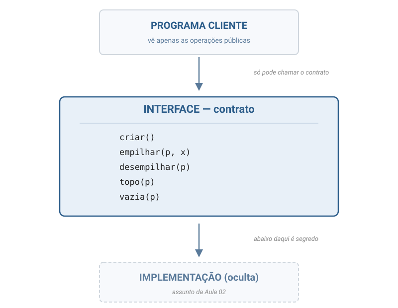
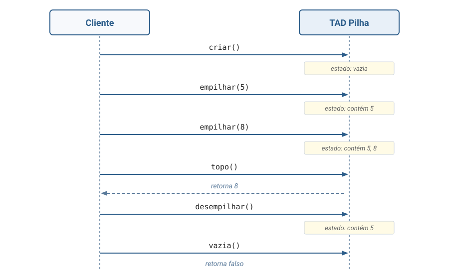
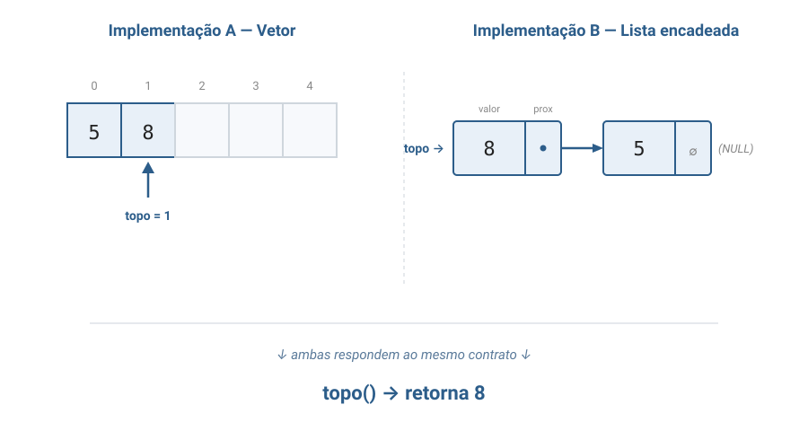

Aula 01
Aula conceitual — falamos sobre estruturas de dados, ainda sem implementá-las.
Bloco 1
Uma forma de descrever um tipo de dado pelo seu comportamento, sem dizer como ele é construído por dentro.
A palavra-chave é abstrato: o TAD responde apenas a "o que esse tipo faz?", e jamais a "como ele faz?".
Como o tipo é construído por baixo (vetor, lista, árvore...) é decisão separada, que pode mudar sem afetar quem usa.
T = (V, O, A)Cada letra responde a uma pergunta:
Os axiomas são o que diferencia um TAD de outro.
Pilha e Fila têm operações com nomes parecidos (inserir, remover, buscar), mas axiomas opostos:
Mesma "cara" de operações, comportamentos completamente diferentes.
Formalizado por Liskov & Zilles (1974) — princípios de engenharia de software que o TAD operacionaliza:
Da escolha da representação interna depende a eficiência das operações (tempo e memória).
Mas não a identidade do TAD.
UmaPilhacontinua sendo umaPilhaquer seja construída sobre vetor, lista encadeada ou qualquer outra estrutura — desde que respeite os axiomas do contrato.
A realização concreta em C começa na Aula 02.
Bloco 2
Você diz o que sua estrutura sabe fazer (suas operações), mas não como ela faz por dentro.
Quem usa o TAD não sabe — e não precisa saber — se por trás existe um vetor, uma lista encadeada, uma árvore ou mágica.
Se um dia trocarem a representação interna da estrutura, o código de quem usa não muda uma linha.
Você aperta o botão "café com leite" → sai café com leite.
Não importa se a máquina mistura na hora ou já tem um cartucho pronto.
Se trocarem por outra marca: continua saindo café com leite quando você aperta o mesmo botão.
Bloco 3
Três formas de "ver" o que um TAD faz.

O cliente só observa o efeito comportamental.


A especificação do TAD é anterior à escolha da representação interna.
Bloco 4
FILE* da stdio.hFILE* arq = fopen("dados.txt", "r");
fgetc(arq);
fclose(arq);
Você nunca acessou arq->buffer ou
arq->descritor_do_so.
Linux e Windows têm implementações totalmente diferentes — seu programa funciona nos dois.
Por quê? Porque FILE é um TAD.
Seis meses depois, a estrutura escolhida está lenta. Precisa trocar.
carrinho.itens[i] em 200 arquivosTAD não é luxo acadêmico — é o que torna sistemas grandes manuteníveis.
Bloco 5
Você aperta volume +, trocar canal.
Samsung, LG ou TCL — os botões (interface) fazem a mesma coisa. Por dentro, cada uma tem um circuito diferente (implementação).
Se a TV quebra e você compra outra marca, o controle universal continua funcionando: ele depende do contrato, não da eletrônica.
Você pede no balcão: "um pão de queijo e um café".
Não precisa saber se o pão veio de forno elétrico, a gás, congelado pré-pronto ou feito na hora.
A interface (pedir → receber) abstrai toda a cozinha. Trocou de fornecedor? Você continua pedindo do mesmo jeito.
Bloco 6
Conceituais — não envolvem programar em C.
Identifique o TAD (Pilha ou Fila) por trás de cada situação, com 1 linha de justificativa baseada no comportamento:
Escreva a especificação do
TAD AgendaTelefonica:
5 operações (criar, adicionar_contato,
buscar_telefone, remover_contato,
vazia) + ao menos 4 axiomas comportamentais.
Sem código.
Cada axioma é uma igualdade do tipo
operação(...) = resultado
(ex.: vazia(criar()) = verdadeiro).
Resposta mínima: 6 axiomas suficientes (para qualquer agenda a, nome n, telefone t):
vazia(criar()) = verdadeirovazia(adicionar_contato(a, n, t)) = falsobuscar_telefone(adicionar_contato(a, n, t), n) = tbuscar_telefone(criar(), n) = erroremover_contato(criar(), n) = criar()remover_contato(adicionar_contato(a, n, t), n) = remover_contato(a, n)
Especificação completa (com assinaturas) em aula01_tad.md.
Leituras complementares:
A família das listas, FIFO e LIFO — base para Fila e Pilha.